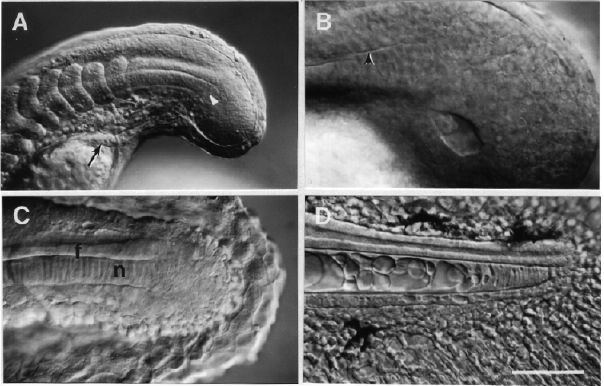

Modified from: Kimmel et al., 1955. Developmental Dynamics 203:253-310. Copyright © 1995 Wiley-Liss, Inc. Reprinted only by permission of Wiley-Liss, a subsidiary of John Wiley & Sons, Inc.
Fig. 28. Tail development. Left side Nomarski views, dorsal the top, anterior to the left. A: Overview at the 21-somite stage (19.5 h). Notice how the primordia of the notochord (white arrowhead) and the spinal cord just dorsal tit spring from the tightly packed tail bud mesenchyme. These tissue primordia lie medially the segmental plate paraxial mesoderm. The arrow shows the pronephric duct near its end, just posterior the yolk extension. B: Kupffer's vesicle, in the midline at the 16-somite stage (17 h). The arrowhead shows the boundary between the primordia of the notochord (below) and spinal cord (above, not hollow at this time). C: By the prim-5 stage (24 h) the tail bud is very small, and is surrounded by the tail fin primordium, the median fin fold. The notochord primordium (n) has the characteristic transient "stack of pennies" appearance. The spinal cord floor plate (f) is a distinctive midline cell row sandwiched between the notochord and the neural tube lumen (the central canal). D: The tail bud disappears entirely (high-pec stage at 42 h). The tail spinal cord narrows ta blind-ended tube with a simple cuboidal lining. The cuboidal cells have cilia (not visible here) that are motile and protrude in the central canal. The notochord presents a neat developmental sequence of vacuolization, beginning with the stack of pennies stage at its posterior end. A distinctive midline hypochord underlies the notochord. Rays of actinotrichia are present in the fin fold that surrounds the entire structure, and melanophores (black) are differentiating. Scale bar: 125 µm for A, 50 µm for B-D.

Figure 28